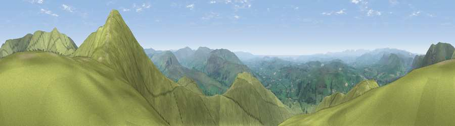

Viewpoint near Sedbergh
#2107 in England · top 4% of its area beats it · near Sedbergh · open accessWhere it is
The exact computed spot (SD 65688 94625). Click the marker for map links.
Public access: this spot lies on mapped open-access land (CRoW Act 2000) — you may roam here on foot. Computed from Natural England's CRoW access layer and OpenStreetMap rights of way — not the legal definitive map. Always verify locally.
The view, rendered

A 360° render of this exact spot computed from the terrain model, tree cover and land cover — summer colours, afternoon light, calibrated against photographs of famous viewpoints. Real trees, hedges and buildings will differ in detail.
The panorama
Grey silhouette: terrain skyline in each direction (720 bearings, Earth curvature and refraction included). Dashed green: skyline with trees (+15 m) and buildings (+8 m) as obstacles. Blue strip: how far the ground is visible on each bearing.
Where the view opens
Wedge length = distance to the farthest visible ground on that bearing (vegetation-aware). Rings at 10, 25 and 50 km.
What fills the view
96% grassland · 3% woodland
Angular shares of the visible panorama (visual magnitude), not map area. Landscape diversity 0.07 (0–1 Shannon).
Key numbers
More beautiful places nearby
The staircase of upgrades: each row has a higher view potential than everything closer. Driving times are estimates from straight-line distance, calibrated against real road routing — check an actual route before setting out.
| Place | Direction | Drive | Score |
|---|---|---|---|
| Arant Haw | E · 1 km | ~2 min | 77.4 |
| Calders | NE · 2 km | ~5 min | 79.0 |
| Calf Top | S · 9 km | ~18 min | 79.8 |
| Crag Hill | SSE · 12 km | ~22 min | 80.0 |
| Ill Bell | WNW · 26 km | ~41 min | 80.9 |
| High Street (summit) | NW · 27 km | ~43 min | 82.6 |
| Viewpoint near Finsthwaite | WSW · 27 km | ~43 min | 84.7 |
| Viewpoint near Finsthwaite | WSW · 27 km | ~44 min | 90.3 |
54.34601, -2.52934 · source: screening · position refined by local search. Computed location — check access rights before visiting.